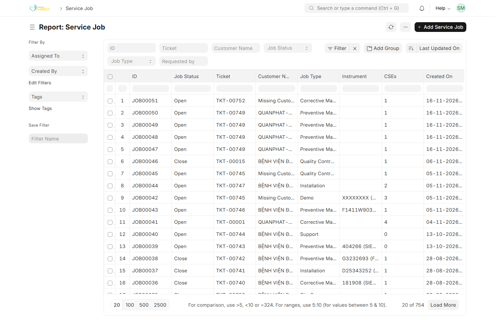
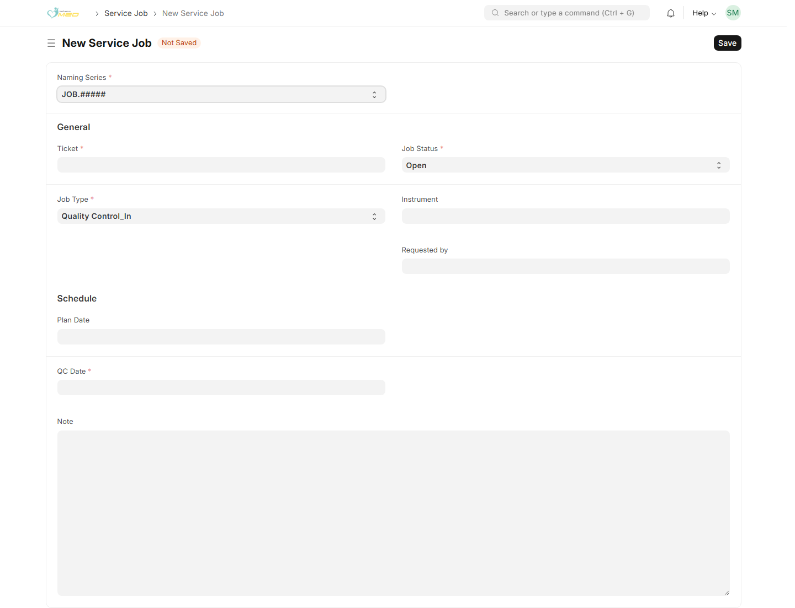
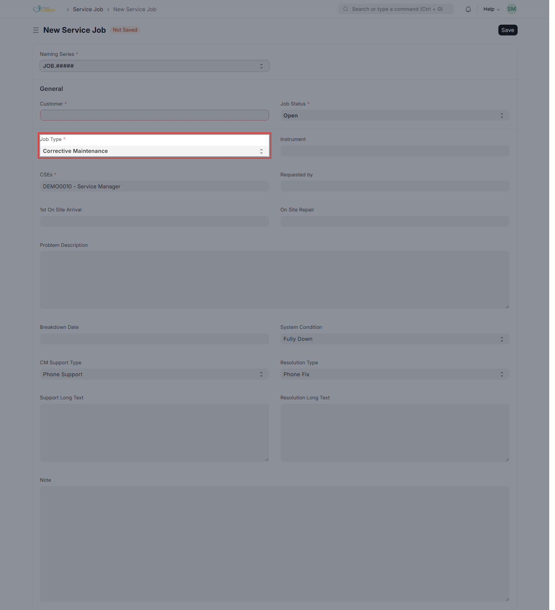
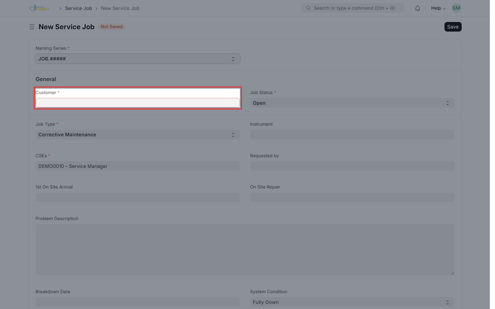

Với job Corrective Maintenance (CM) mới, bạn có thể tạo job trước mà không chọn Ticket. Sau khi lưu, hệ thống tự tạo một Ticket mới và gắn vào job. Luồng này khác với Preventive Maintenance (bắt buộc có Ticket, hoặc job sinh từ Generate Schedule trên Ticket).
-
Mở danh sách và Add Service Job
Trên Desk, nhấn Ctrl+G, gõ Service Job (hoặc mở từ workspace Service). Trên danh sách, nhấn + Add Service Job.

Danh sách Service Job -
Chọn Job Type Corrective Maintenance
Trên form job mới, chọn Job Type = Corrective Maintenance trước khi làm việc với Ticket. Ô Ticket sẽ ẩn (bạn không bắt buộc chọn ticket có sẵn).

Form Service Job mới — trước khi chọn loại 
Sau khi chọn Corrective Maintenance -
Điền Customer, CSEs và Schedule
Khi CM và chưa có Ticket, các trường sau hiển thị để bạn điền trực tiếp trên job (không lấy từ ticket có sẵn):
- Customer — bắt buộc (một khách hàng).
- CSEs — kỹ sư dịch vụ (danh sách đầy đủ, không giới hạn theo ticket khi chưa gắn ticket).
- Job Status — Open hoặc Close (ảnh hưởng trạng thái Ticket khi tạo).
- Khối Schedule — ngày plan và các trường CM (Problem, Breakdown, On Site, …) theo quy trình CM thông thường.

Corrective Maintenance — Customer và CSEs trên job (không chọn Ticket) -
Lưu job — hệ thống tạo Ticket
Nhấn Save. Hệ thống tạo Ticket mới (mã dạng TKT-…), map dữ liệu từ job sang Ticket, rồi gắn mã Ticket vào ô Ticket trên job đã lưu.
Trường trên Service Job Sang Ticket Customer Customers (mảng JSON, một khách hàng) CSEs CSEs (giữ nguyên) Job Status Open / Close Status Open / Closed Plan Start Date (Schedule) Plan Start Date Plan End Date (Schedule) Plan End Date Mở Ticket vừa tạo từ Ticket trên job (link) hoặc từ danh sách Ticket để bổ sung Approver, mô tả và các trường khác nếu quy trình nội bộ yêu cầu.
PM khác CM: Job Preventive Maintenance luôn cần Ticket sẵn có. Để tạo hàng loạt job PM từ Ticket, dùng hướng dẫn Generate Schedule (Ticket PM).
Xử lý sự cố
| Triệu chứng | Gợi ý |
|---|---|
| Vẫn thấy ô Ticket bắt buộc | Chọn Corrective Maintenance trên form mới; đảm bảo chưa chọn Ticket trước đó. Làm mới form (Add Service Job mới). |
| Không thấy CSEs | Xác nhận Job Type là CM và chưa gắn Ticket. Nếu vừa đổi loại job, chờ form cập nhật hoặc tải lại trang job mới. |
| Lỗi khi Save — Customer | Customer bắt buộc với mọi Service Job; điền trước khi lưu. |
| Save xong nhưng không có Ticket mới | Chỉ job mới + CM + ticket trống mới bootstrap. Job đã lưu hoặc đã có Ticket sẽ không tạo thêm. |